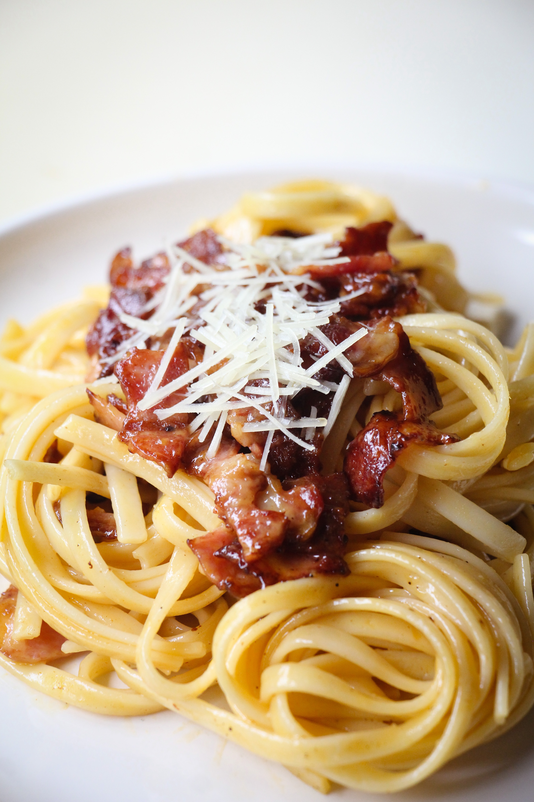

Carbonara is a Roman dish made with eggs, hard cheese,
and cured pork. Its signature rich and silky sauce comes
from beaten eggs tossed with hot pasta. The trick to making
carbonara is making sure the pasta is hot enough to cook the
eggs, but not so hot that they curdle.
-
Oil: This traditional Italian recipe starts with olive oil.
-
Guanciale: Buy guanciale (or cured pork cheek) at your local butcher. If you can't find it, you can substitute unsmoked bacon or pancetta.
-
Spaghetti: Use store-bought or homemade spaghetti noodles. If you like, you can substitute bucatini for the spaghetti.
-
Eggs: Three large eggs add richness and flavor.
-
Cheese: Opt for hand-shredded Pecorino Romano cheese. You can substitute Parmesan, if preferred.
-
Seasonings: This flavorful spaghetti alla carbonara is simply seasoned with salt and black pepper.
You'll find the full, step-by-step recipe below - but here's a brief overview of what you can expect when you make traditional spaghetti alla carbonara:
-
Cook the pork in olive oil until browned and crispy, then drain on paper towels.
-
Boil the spaghetti in salted water. Drain and return to the pot. Let cool.
-
Whisk the eggs, 1/2 of the cheese, and some pepper in a bowl until smooth.
-
Pour the egg mixture over the pasta, stirring quickly, until creamy.
-
Stir in the pork, then top with the remaining cheese and more black pepper.